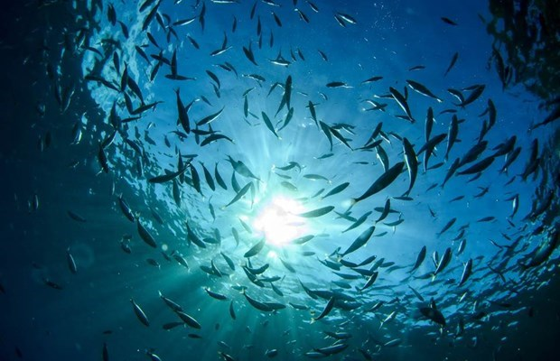

Hành trình khám phá các tầng sinh thái biển Việt Nam từ thềm lục địa đến vực sâu, nơi những điều kỳ bí ẩn hiện.

0 - 200m
Thềm lục địa Tầng nắng ấm - Nơi bắt đầu của sự sống
Nơi nuôi dưỡng 80% hải sản tiêu thụ hàng ngày và tập trung các giàn khoan dầu khí. Đây là không gian sinh trưởng của vô số loài hải sản quen thuộc với ngư dân, đồng thời là nơi thợ lặn khám phá những bí ẩn đại dương sâu hơn các bãi tắm thông thường.
Dưới 12 mét nước (Vùng bờ): Nơi những chiếc thuyền thúng gắn máy – nét văn hóa sông nước độc đáo của Việt Nam – dập dềnh bắt ghẹ xanh, nghêu, sò. Họ đi về trong ngày, mang theo vị mặn mòi sát vách đất liền.
Đây là đới nước chịu ảnh hưởng lớn nhất từ đất liền nhưng lại có độ đa dạng sinh học vô cùng sôi động. Ánh sáng xuyên thấu 100% giúp các rạn san hô nông phát triển và tạo ra những bãi cát trắng mịn lý tưởng làm bãi tắm.
Khu vực quanh Quần đảo Cát Bà (Hải Phòng), các bãi tắm nông nổi tiếng tại Vịnh Hạ Long, và bãi biển mũi Cà Mau. Đây cũng là độ sâu của các vùng nuôi tôm hùm, bè cá lồng san sát ngoài khơi đảo Lý Sơn (Quảng Ngãi).
Từ 12 đến 50 mét nước (Vùng lộng): Lãnh địa của cá nục, cá trích, mực ống bằng những con tàu gỗ tầm trung. Đây là nguồn đạm nuôi sống hàng triệu gia đình Việt mỗi ngày.
Thế giới cát thủy tinh và sa khoáng Tập trung các dải sa khoáng titan (ilmenit, zircon) trải dài từ Quảng Ninh đến Bình Thuận, trữ lượng thuộc tầm thế giới. Là nguồn xuất khẩu công nghiệp chiến lược, sản lượng khai thác ilmenit đạt trung bình 220.000 tấn/năm.
Mực nước này tạo ra một lòng chảo bảo bọc hoàn hảo cho các hoạt động hàng hải. Toàn bộ Vịnh Thái Lan rộng lớn có độ sâu trung bình cực nông, chỉ khoảng 45m, biến nơi đây thành "vùng biển ấm" hiền hòa nuôi dưỡng những rặng san hô cổ.
Vùng biển quanh Đảo Phú Quốc và Quần đảo Nam Du (Kiên Giang) nằm trọn trong lòng Vịnh Thái Lan nông phẳng. Phần lớn diện tích Vịnh Bắc Bộ ở phía giữa vịnh cũng đạt độ sâu trung bình từ 40m - 50m, nơi có đảo hẻo lánh Bạch Long Vĩ án ngữ.
Từ 50 đến hơn 200 mét nước (Vùng khơi): Những con tàu vỏ thép, tàu gỗ lớn dài trên 15m phải rẽ sóng dài ngày ra tận Trường Sa, Hoàng Sa. Ngư dân phải thả đường câu sâu trăm mét giữa lòng biển Đông để săn cá ngừ đại dương, cá thu – những chiến lợi phẩm kiêu hãnh của chủ quyền biển đảo.
Tổ ấm vàng đen Dầu thô và khí thiên nhiên với trữ lượng khoảng 4,4 tỷ thùng dầu (đứng số 1 Đông Nam Á). hai thác hơn 400 triệu tấn dầu thô quy đổi. Đặc biệt là kỳ tích thế giới: chinh phục công nghệ rút dầu từ tầng móng đá Granite nứt nẻ tại siêu mỏ Bạch Hổ.
Đây là nấc thang chuyển tiếp từ thềm nông sụp xuống vùng biển sâu thẳm. Nơi dòng hải lưu dịch chuyển mạnh mẽ mang theo nguồn dinh dưỡng dồi dào, là thiên đường của các loài cá di cư cỡ lớn.
Hai quần đảo tiền tiêu Hoàng Sa và Trường Sa. Sườn đá ngầm của các đảo như Phan Vinh, Đá Tây, Vành Khăn có vách dốc gần như thẳng đứng đâm thẳng xuống đáy vực sâu thẳm của Biển Đông.
200 - 3000m
Sườn lục địa Vùng biển sâu - Nơi sinh vật kỳ bí ẩn hiện
Đây là vùng biển sâu, nơi ánh sáng mặt trời không thể xuyên thấu. Nhiệt độ giảm mạnh, áp suất tăng cao, tạo ra môi trường sống khắc nghiệt cho các sinh vật biển. Tuy nhiên, đây cũng là nơi sinh sống của nhiều loài sinh vật kỳ bí và tồn tại những điều quý hiếm đang đuọc khám phá.
"Quỷ đen xấu xí" ở độ sâu dưới 600m: Đây là phân tầng ghi nhận sự xuất hiện của Mực quỷ (Vampyroteuthis) tại bồn trũng Biển Đông. Khác với mực thông thường, loài sinh vật này không có túi mực, sở hữu cơ thể trơn nhũn như sứa cùng đôi mắt to màu đỏ ngầu và khả năng phát quang sinh học ma mị để đánh lừa kẻ thù trong bóng tối.
Thợ săn hung hãn ở độ sâu 80m - 1.600m: Cá rắn lục (Viperfish) được ghi nhận là một trong những tay săn mồi đáng sợ nhất dưới lòng biển sâu. Chúng có chiếc miệng khổng lồ đầy răng sắc nhọn cong vút đến mức không thể khép mồm lại được, săn mồi bằng cách dùng chiếc vây lưng dài phát sáng lập lòe như một chiếc cần câu để nhử các loài cá nhỏ.
"Đường cao tốc" của Cá voi nhà táng (độ sâu 1.000m - 3.000m): Vùng biển sâu ngoài khơi miền Trung Việt Nam là nơi có những vách sườn dốc ngầm sâu đột ngột. Hiện tượng hải lưu va vào vách dốc tạo ra các dòng nước trào ngược, đẩy hàng triệu tấn sinh vật phù du lên cao, biến nơi đây thành trạm dừng chân quen thuộc của loài Cá voi nhà táng khổng lồ ghé sát vào bờ để định vị và kiếm ăn trong hành trình di cư xuyên đại dương.
Năm 1986 – Đánh thức "vàng đen" (Độ sâu 100m – 250m): Đợt khảo sát lịch sử đã giúp các kỹ sư Việt Nam cắm mốc chủ quyền công nghệ, khai thác tấn dầu thương mại đầu tiên từ tầng móng Granite nứt nẻ tại mỏ Bạch Hổ – một kỳ tích địa chất khiến ngành dầu khí thế giới sững sờ.
Tháng 4/2019 – Khám phá mật đạo ngầm (Độ sâu 60m – 93m): Nhóm chuyên gia lặn hang động Anh - Việt (những người từng cứu hộ đội bóng nhí Thái Lan) đã lặn xuống dòng sông ngầm của hang Sơn Đoòng (Quảng Bình) [nld.com.vn, sondoongcave.info, ivivu.com]. Họ tìm thấy một lối đi ngầm sâu hoàn toàn mới xuyên lòng đất kết nối sang hang Thung, mở ra chương mới đầy kinh ngạc về hệ thống hang động lớn nhất hành tinh [ivivu.com].
Tháng 5/2025 – Vây bắt "siêu thuốc" đại dương (Độ sâu 200m – 1.000m): Chuyến hải trình hỗn hợp gần đây của tàu đại dương Oparin (Nga) cùng các nhà khoa học Việt Nam đã thu quét hàng ngàn sinh vật biến đổi gene độc dị dọc vách dốc miền Trung [vnexpress.net, baotintuc.vn]. Chiến lợi phẩm thu được là các hợp chất sinh học quý báu, đóng vai trò cốt lõi cho y học thế giới trong việc bào chế thuốc đặc trị ung thư.
Bạn đang bước vào "Vùng Chạng Vạng" (Twilight Zone), nơi 99% ánh sáng mặt trời bị dập tắt. Khung cảnh đổi màu đột ngột sang một sắc xanh lục đậm ma mị, rồi chuyển dần thành màu mực thẫm xanh tím trước khi chìm hẳn vào bóng đêm vĩnh cửu.
Tại đây, cái lạnh chạm ngưỡng 1°C và áp suất tương đương một chiếc xe tăng đè lên ngón tay bạn. Thế nhưng, thế giới này không hề chết chóc; bóng tối được thắp sáng bởi hàng triệu đốm đèn huỳnh quang xanh lam, đỏ rực từ các sinh vật biển tự phát sáng, tạo nên một dải ngân hà kỳ vĩ di động ngay dưới đáy đại dương [baotanghdh.vn].
Giới hạn lặn bình khí của con người chỉ ở mức 332,35 mét (do thợ lặn Ahmed Gabr lập) vì áp suất nước có thể làm nát phổi. Để chạm tới sườn dốc 3.000m, các nhà khoa học Việt Nam và quốc tế phải ẩn mình hoàn toàn trong các tàu ngầm thám hiểm vỏ titan chuyên dụng như tàu Alvin hoặc Giao Long để không bị nghiền nát.
3000+
Vực sâu - Nơi những điều kỳ bí ẩn hiện
Đây là vùng biển sâu nhất, nơi ánh sáng mặt trời không thể xuyên thấu. Nhiệt độ giảm mạnh, áp suất tăng cao, tạo ra môi trường sống khắc nghiệt cho các sinh vật biển [jmes.humg.edu.vn]. Tuy nhiên, đây cũng là nơi sinh sống của nhiều loài sinh vật kỳ bí không mắt và tồn tại những bãi kết hạch kim loại quý hiếm đạt độ sâu kỷ lục 5.559 mét
Con số 5.559m vượt xa độ sâu trung bình của toàn bộ các đại dương trên Trái Đất (khoảng 3.700m). Dù chưa thể sánh bằng "Vực thẳm Challenger" ở rãnh Mariana (sâu gần 11.000m), nhưng mức sâu này đủ để nhấn chìm toàn bộ ngọn núi Fansipan cao nhất Việt Nam (3.143m) mà vẫn thừa một khoảng nước sâu tới hơn 2.400m!
Điểm sâu nhất này được lập bản đồ nhờ công nghệ quét sóng âm đa tia của các tàu hải dương học, ghi nhận áp suất tàn khốc gấp 550 lần mặt biển.
Đây là "vùng trắng dữ liệu" bao la chưa thể khai phá hết của Việt Nam, cất giấu các rạn san hô đen cổ thụ, mỏ Băng cháy khổng lồ và thế giới sinh vật không mắt dị biệt.
Quái vật bọ biển khổng lồ (Bathynomus jamesi): Phát hiện tại vùng biển sâu Việt Nam, loài giáp xác mang hình thù dị biệt này có chiều dài hơn 30cm, biến hóa cơ thể cực đại để thích nghi áp suất tàn khốc của đáy biển sâu.
Do không có ánh sáng mặt trời để quang hợp, toàn bộ sinh vật ở vùng đáy vực này sống sót nhờ một hiện tượng thực tế cực kỳ thú vị gọi là "Tuyết đại dương" (Marine Snow). Đó là những cơn mưa hạt hữu cơ từ xác sinh vật, tảo biển ở tầng nắng ấm phân hủy và rơi rụng suốt hàng tháng trời mới chạm tới đáy vực thẳm, trở thành nguồn thức ăn duy nhất nuôi dưỡng các loài cá mù và hải sâm đáy biển.
Điểm độc đáo của các loài cá biển sâu tại bồn trũng Việt Nam (như cá rồng biển, cá răng kiếm) là chúng không sử dụng mắt để nhìn. Thay vào đó, chúng tiến hóa các tế bào hóa học để biến cơ thể thành những chiếc đèn huỳnh quang tự phát sáng nhằm dụ con mồi tự bơi vào miệng trong màn đêm vĩnh cửu.
12,000+
Loài sinh vật biển Hệ sinh thái giàu có TOP20 thế giới
17,000+
Mẫu vật khoa học Thu hoạch từ tàu đại dương Oparin
400 Triệu
Tấn dầu thô quy đổi Ký tích đá móng Granite độc nhất
5,4 tỷ
Thùng đá khó băng cháy Trữ lượng năng lượng lai khơi xa
5,559m
Vực thẩm kỷ lục Trái tim đen sâu nhất biển đông
NEWS
Phát hiện hơn 1.100 loài sinh vật biển mới trong các cuộc khảo sát đại dương
Các nhà khoa học tiếp tục khám phá những bí ẩn của đại dương thông qua các chuyến thám hiểm biển sâu.